Detail Page
Product Detail Page
↗상품의 매력을 전달하는 상세페이지
상품의 매력을 전달하는 상세페이지
웹사이트 및 UI 리디자인
프로모션 배너 디자인

제품 촬영 · 이미지 보정

인물 · 뷰티 · 패션 이미지 보정
영상 콘텐츠 기획 · 촬영 · 편집
브랜드 비주얼 콘셉트
앱 UI 디자인 프로젝트
상세페이지 · 배너

생성형 AI로 가상의 모공 케어 앰플과 제품 연출 이미지를 제작하고, 상세페이지와 광고 배너로 확장한 개인 프로젝트입니다. 모공과 피부결 관리에 관심 있는 20~30대 소비자를 고려해 제품 특징과 성분, 사용감을 순서대로 소개했습니다.
다양한 제품 특징과 성분을 정리하면서 상세페이지와 배너 각각의 목적에 맞게 메시지를 전달해야 했습니다.
상세페이지에서는 제품 정보를 이해하기 쉽게 전달하고, 배너에서는 핵심 장점과 프로모션을 빠르게 인지하도록 구성했습니다.
피부 고민에서 제품 솔루션·성분·사용 방법으로 이어지는 정보 흐름을 설계하고, 배너에는 ‘3중 모공 케어’ 메시지와 제품 비주얼을 집중 배치했습니다.
피부 고민 → 제품 특징 → 성분 → 사용 방법 순서로 내용을 배치하고, 배너는 제품과 핵심 문구가 먼저 보이도록 구성했습니다.
브라운·베이지 계열로 따뜻하고 차분한 분위기를 표현하고, Pretendard의 크기와 굵기를 달리해 정보의 우선순위를 구분했습니다.
AI로 제작한 제품·연출 이미지를 Photoshop으로 보정·합성하고, 성분 아이콘과 인포그래픽으로 정보를 시각화했습니다.
가상의 제품을 상세페이지와 배너로 확장하면서 콘텐츠별 정보의 양과 강조점을 조절했습니다. 서로 다른 형식에서도 컬러와 비주얼 콘셉트를 일관되게 유지하는 방법을 익혔습니다.
상세페이지
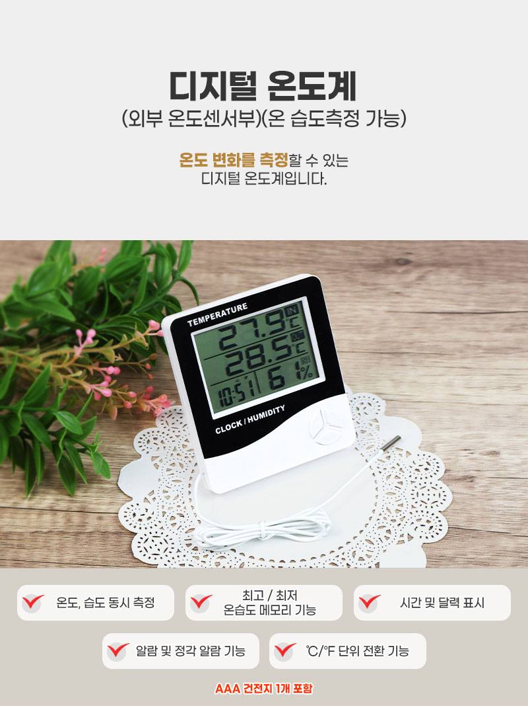
디지털 온도계의 기능과 사용 방법을 쉽게 전달하기 위해 제작한 인하우스 상세페이지입니다. 제품을 직접 촬영·보정하고 영문 설명서를 번역·정리해 사진과 설명을 연결했습니다.
영문 설명서만으로는 주요 기능과 버튼 조작 방법을 소비자가 한눈에 이해하기 어려웠습니다.
온습도 확인부터 세부 기능과 사용 방법까지 필요한 정보를 쉽게 찾을 수 있도록 구성했습니다.
영문 설명서의 핵심 내용을 정리하고, 기능별 제품 사진과 조작 설명을 순서대로 배치했습니다.
제품 소개 → 주요 기능 → 버튼 조작 → 세부 기능 → 사용 방법 → 제품 사양 순으로 정보를 구성했습니다.
화이트·라이트 그레이를 기본으로 민트·블루를 포인트 컬러로 사용하고, 글자 크기와 굵기로 주요 정보를 구분했습니다.
직접 촬영한 제품 사진을 보정하고, 버튼 위치와 조작 방법을 확대 이미지·화살표·설명 문구로 표현했습니다.
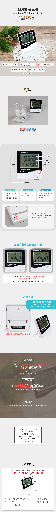
제품 촬영과 영문 설명서 정리부터 상세페이지 제작까지 진행했습니다. 특히 기능 설명을 실제 제품 이미지와 연결하며 복잡한 정보를 이해하기 쉽게 시각화하는 경험을 쌓았습니다.
상세페이지 · 설명서
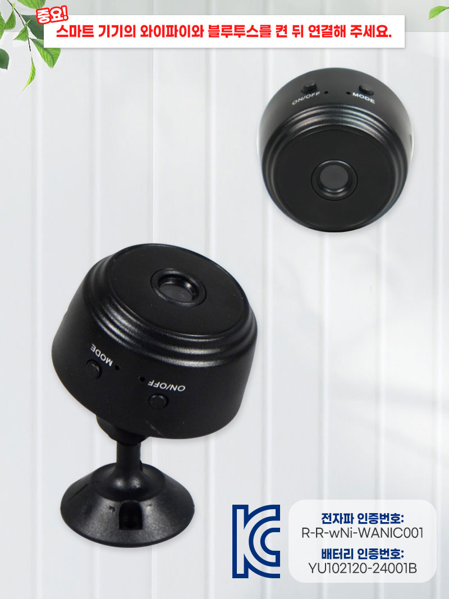
소형 카메라의 주요 기능과 사용 방법을 안내하기 위해 제작한 제품 상세페이지 및 사용 설명서입니다. 제품의 특징과 활용 방법을 소개하고, 별도의 앱 설치와 카메라 연결 과정은 사용자가 쉽게 따라 할 수 있도록 단계별 이미지와 설명으로 구성했습니다.
소형 카메라를 사용하기 위해서는 전용 앱 설치부터 기기 연결 및 설정까지 여러 단계를 거쳐야 하므로, 처음 사용하는 고객이 연결 과정에서 어려움을 겪을 수 있었습니다.
제품의 주요 특징을 효과적으로 전달하는 동시에, 복잡한 앱 연결 과정을 사용자가 순서대로 따라 할 수 있도록 안내하는 것을 목표로 했습니다.
제품 소개와 사용 방법을 구분하고, 앱 연결 과정은 실제 화면 캡처와 단계별 설명을 활용해 상세페이지에 구성했습니다. 또한 해당 내용을 별도의 사용 설명서로 제작하여 제품 사용 시에도 참고할 수 있도록 했습니다.
제품 소개부터 주요 기능, 사용 방법, 앱 연결 안내 순으로 정보를 배치했습니다. 특히 앱 연결 과정은 단계별로 구분하여 순서에 따라 확인할 수 있도록 구성했습니다.
제품 소개 영역은 차분한 배경과 간결한 타이포그래피를 사용하고, 앱 연결 안내 영역에는 밝은 블루 컬러를 적용해 정보의 성격을 구분했습니다.
제품 사진과 기능별 설명 이미지를 활용하고, 앱 연결 과정은 실제 화면 캡처와 강조 표시, 번호를 통해 사용자가 필요한 조작을 쉽게 파악할 수 있도록 디자인했습니다.
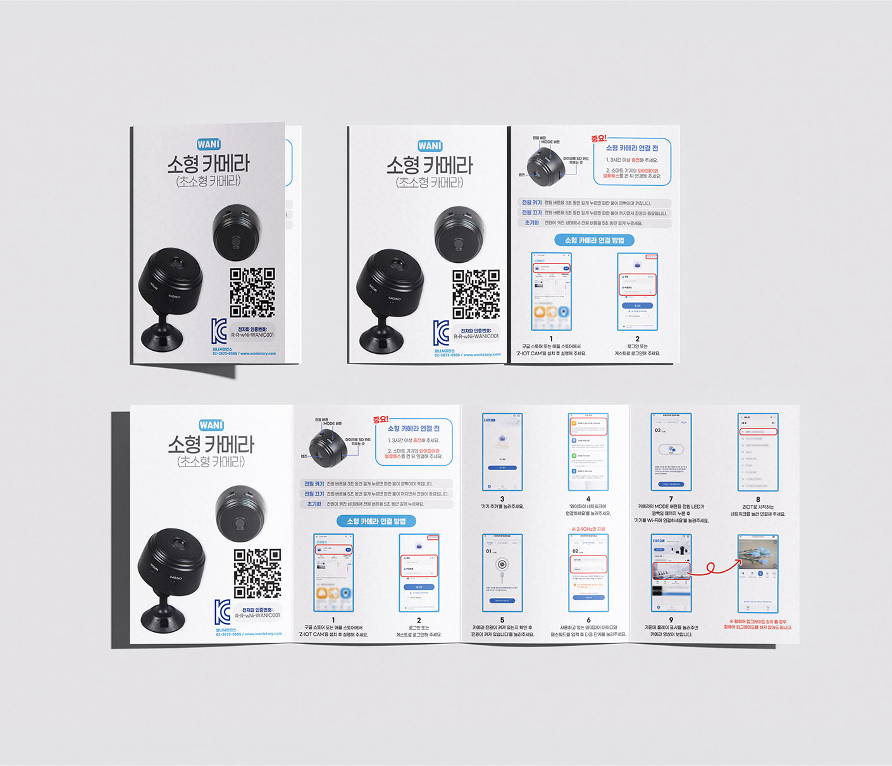
제품 상세페이지와 별도의 사용 설명서를 제작하며 제품 홍보와 사용 안내라는 서로 다른 목적에 맞게 정보를 구성했습니다. 특히 복잡한 앱 연결 과정을 단계별로 시각화하면서 사용자의 이해를 돕는 정보 전달 방식의 중요성을 경험했습니다.
자사몰 운영 안내 · 팝업 디자인
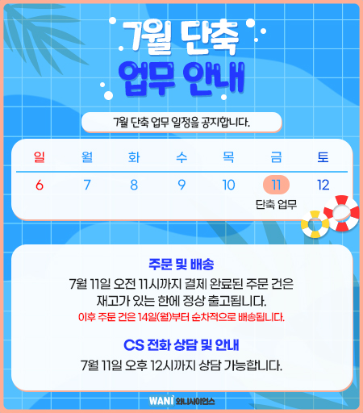
7월 단축 업무 일정에 따른 주문 및 배송, 고객 상담 운영 시간을 안내하기 위해 제작한 자사몰 공지 팝업입니다. 고객이 변경된 일정을 쉽게 확인할 수 있도록 달력과 안내 문구를 중심으로 정보를 구성했습니다
달력을 중심으로 단축 업무일을 시각적으로 강조하고, 하단에는 주문·배송 및 고객 상담 안내를 구분하여 배치하였습니다.
시원한 블루 계열의 컬러와 여름 분위기의 그래픽을 활용하고, 제목과 주요 일정에 대비를 주어 가독성을 높였습니다.
수영 튜브와 야자수 등 계절감을 나타내는 일러스트를 활용하여 여름 분위기를 표현하고, 날짜별 정보를 직관적으로 확인할 수 있도록 디자인하였습니다.
제품 촬영 · 이미지 보정
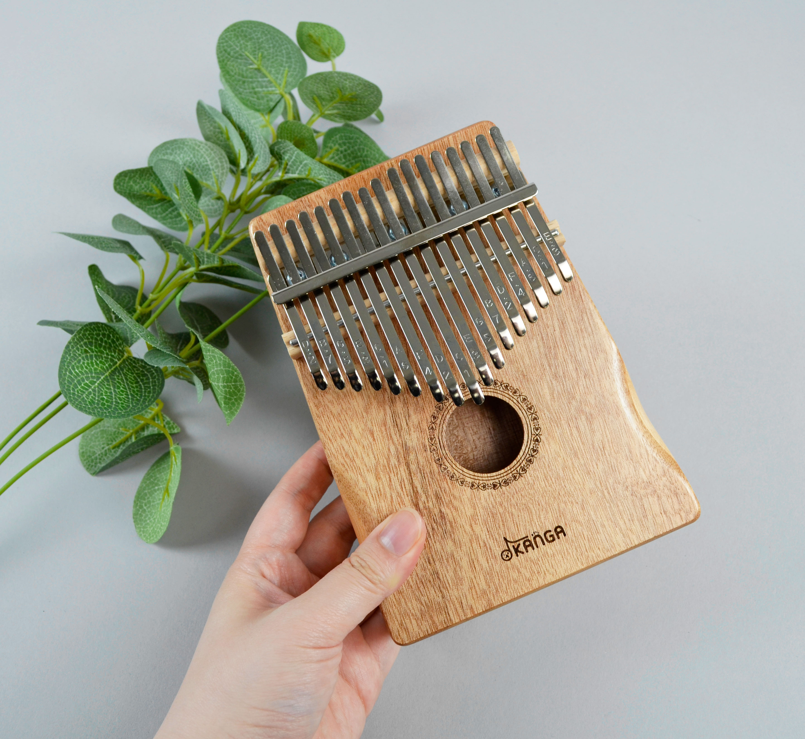
제품의 특징을 효과적으로 전달하기 위해 직접 촬영하고 이미지를 보정한 작업입니다. 제품에 맞는 구도와 조명, 색감을 고려하여 콘텐츠에 활용할 수 있는 이미지를 제작하였습니다.
제품의 형태와 특징이 잘 드러나도록 촬영 구도와 배경을 구성하였습니다.
제품의 재질과 입체감이 자연스럽게 표현되도록 조명 방향과 밝기를 조절하였습니다.
촬영 후 색감과 명암을 보정하고 불필요한 요소를 정리하여 이미지의 완성도를 높였습니다.
인물 · 뷰티 · 패션 이미지 보정
인물 및 패션 이미지의 피부결, 색감, 의류 주름 등을 자연스럽게 보정한 작업입니다. 원본의 특징을 유지하면서 이미지의 완성도를 높이는 데 중점을 두었습니다.
이미지의 분위기와 피사체의 특징을 고려하여 색감과 밝기, 명암을 조정하였습니다.
피부결과 의류 주름 등 필요한 부분을 자연스럽게 정리하고 원본의 질감을 유지하였습니다.
전체 이미지의 색감과 디테일을 균형 있게 조정하여 완성도를 높였습니다.
Before & After 01
Before & After 02
영상 콘텐츠 기획 · 촬영 · 편집
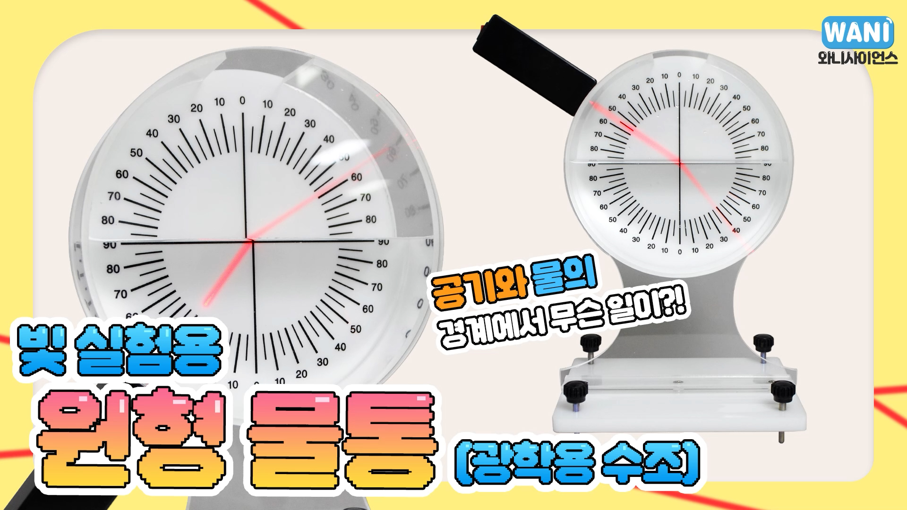
빛의 성질을 쉽고 흥미롭게 이해할 수 있도록 제작한 교육 영상입니다.
공기와 물의 경계에서 빛이 나아가는 모습을 관찰할 수 있으며, 영상을 따라 하면서 실험 도구의 사용법을 익히고
직접 실험을 진행할 수 있도록 제작하였습니다.
실험 도구의 사용법과 빛의 진행 과정을 글과 이미지만으로는 이해하기 어렵다는 점을 고려하였습니다.
빛의 성질을 쉽게 이해하고 직접 실험할 수 있도록 안내하였습니다.
질문과 간단한 애니메이션을 활용하여 시청자의 호기심을 유도하고, 자연스럽게 실험 과정에 집중할 수 있도록 구성하였습니다.
과학 실험에 관심 있는 학생 및 교육자
직접 관찰하고 따라 하며 이해하는 빛의 성질
실험 과정과 관찰 결과를 중심으로 한 직관적인 교육 영상
실험 순서에 따라 화면이 자연스럽게 이어지도록 구성하였습니다.
실험 장면을 방해하지 않도록 간결한 자막과 그래픽을 활용하였습니다.
빛의 진행 방향과 실험 결과가 명확하게 드러나도록 다양한 구도를 활용하여 촬영하였습니다.
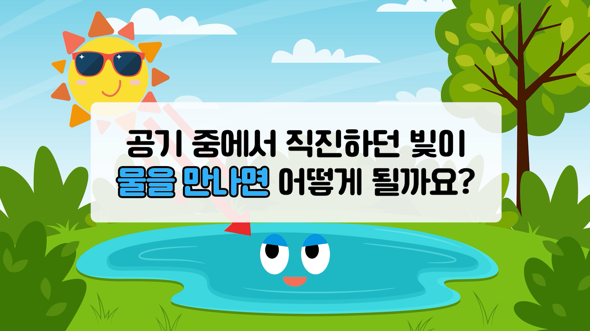
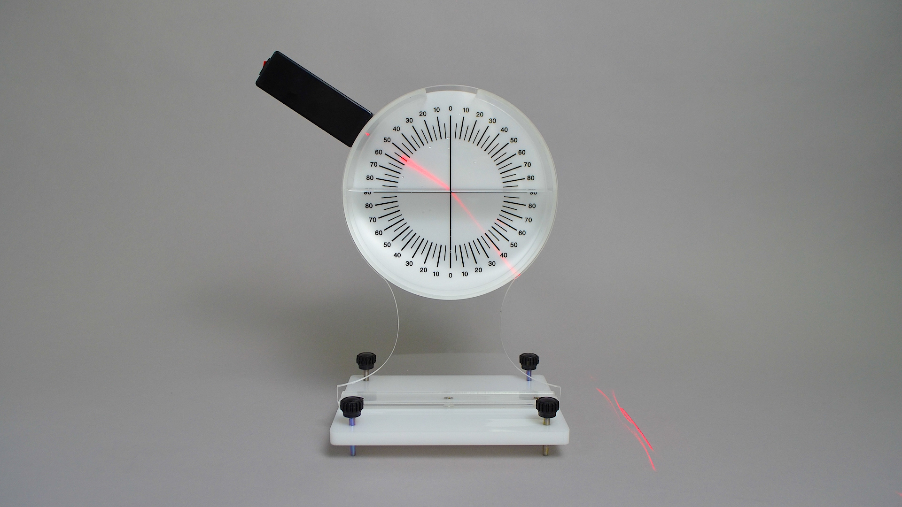
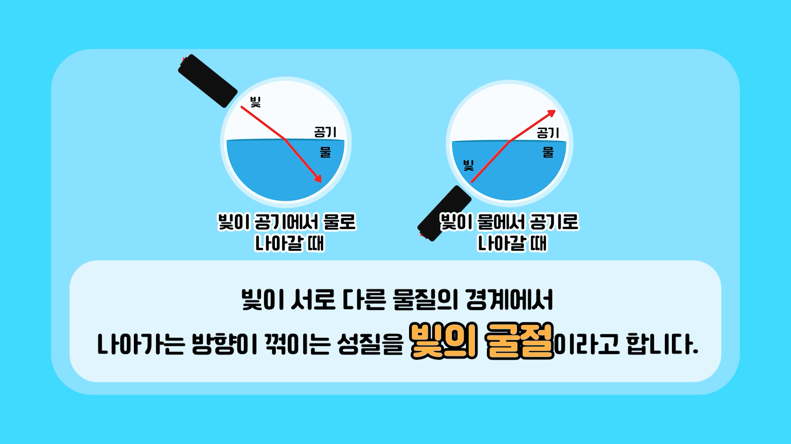
레이저 빛의 굴절 현상을 선명하게 촬영하는 데 어려움이 있었지만, 이를 효과적으로 보여주기 위해 촬영 구도와 표현 방식을 고민했습니다. 또한 시청자가 실험 과정을 쉽게 이해하고 따라 할 수 있도록 영상의 전개 순서와 편집 구성에 신경 썼습니다. 이번 작업을 통해 교육 영상에서는 시각적 전달력뿐 아니라 정보의 흐름과 이해하기 쉬운 구성이 중요하다는 점을 배웠습니다.
로고 · 명함 디자인
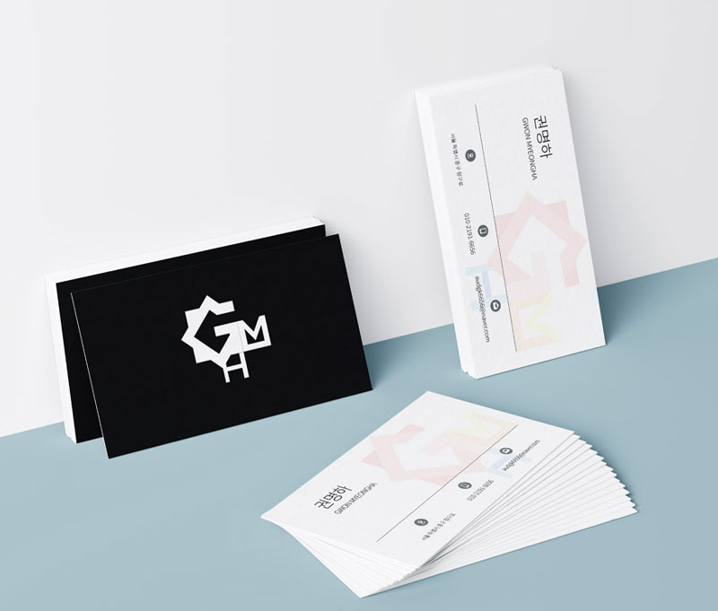
이름의 영문 이니셜을 활용하여 개인 로고와 명함을 제작한 프로젝트입니다. 이니셜을 기하학적인 형태로 조합하여 로고를 디자인하고, 다양한 색상과 흑백의 대비를 통해 개인의 디자인 방향성과 정체성을 표현하였습니다.
명함의 한 면에는 이름과 연락처 등 필수 정보를 간결하게 배치하고, 반대 면에는 로고를 중심으로 구성하여 개인의 정체성이 강조되도록 디자인하였습니다.
다양한 분야에서 역량을 발휘하는 디자이너로 성장하고자 하는 목표를 여러 색상으로 표현하였습니다. 흑백 버전은 컬러 로고와 대비되는 단정하고 전문적인 이미지를 전달하도록 구성하였습니다.
영문 이니셜을 기하학적인 형태로 결합하여 독창적인 심볼을 제작하였습니다. 컬러와 흑백 두 가지 버전으로 확장하여 다양한 배경에서도 활용할 수 있도록 디자인하였습니다.
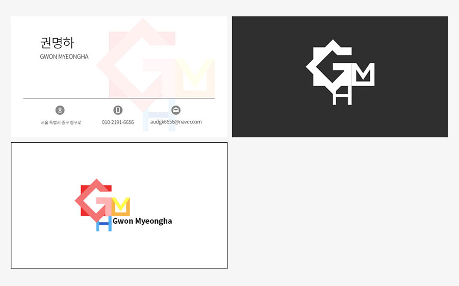
웹사이트 리디자인
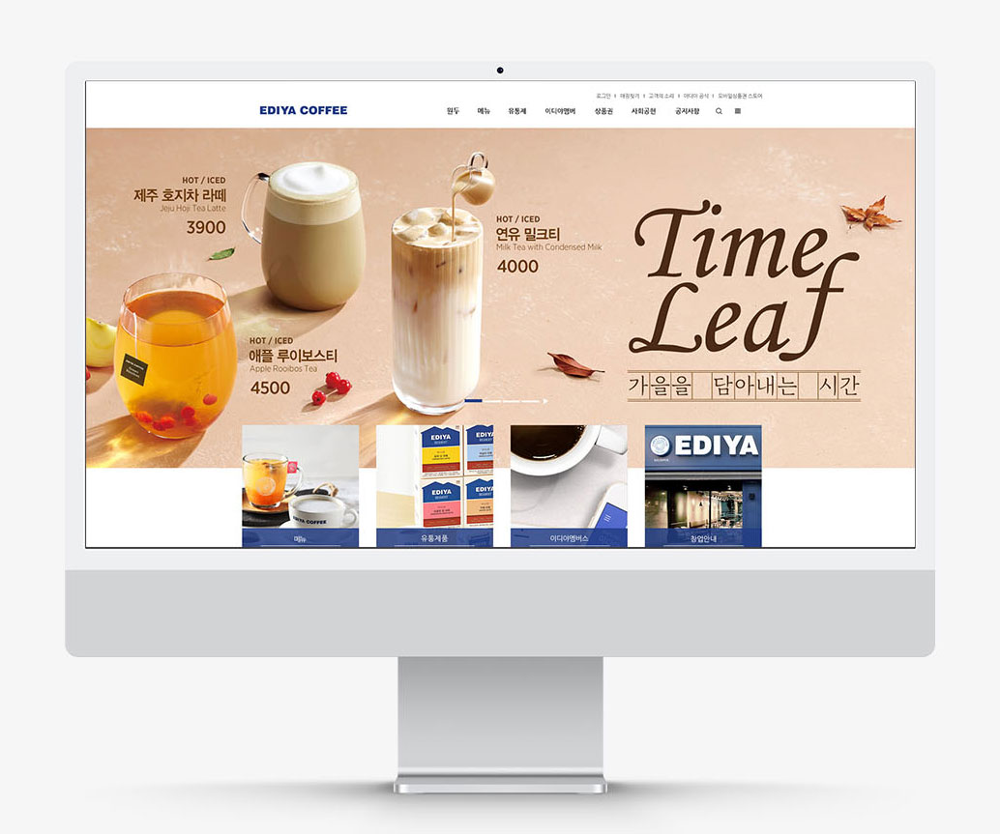
이디야커피 웹사이트의 주요 메뉴와 콘텐츠를 사용자가 편리하게 확인할 수 있도록 메인 페이지를 재구성한 웹 리디자인 프로젝트입니다. 브랜드의 기존 이미지를 유지하면서 주요 메뉴를 메인 화면에 배치하고, 정보의 접근성과 가독성을 고려하여 디자인했습니다.
다양한 메뉴와 브랜드 콘텐츠를 사용자가 메인 화면에서 쉽게 확인할 수 있도록 구성할 필요가 있었습니다.
사용자가 필요한 메뉴와 정보를 쉽게 찾을 수 있도록 화면을 구성하고, 브랜드의 일관된 이미지를 유지하는 것을 목표로 하였습니다.
주요 메뉴를 메인 화면에 카드 형태로 배치하고, 콘텐츠별 영역을 구분하여 정보의 접근성을 높이고자 하였습니다.
상단에는 시즌 프로모션을 크게 배치하고, 그 아래에는 사용자가 자주 찾는 주요 메뉴를 카드 형태로 정렬하였습니다. 하단에는 브랜드 소식과 매장 찾기 등의 콘텐츠를 구분하여 필요한 정보를 쉽게 확인할 수 있도록 구성하였습니다.
이디야커피 로고의 블루 컬러를 포인트 색상으로 활용하여 브랜드의 통일성을 유지하였습니다. 나눔고딕(NanumGothic) 서체를 사용하고, 제목과 본문의 크기 및 굵기에 차이를 두어 정보의 가독성을 높였습니다.
주요 메뉴를 이미지와 텍스트가 결합된 카드형 UI로 구성하여 각 메뉴의 내용을 직관적으로 전달하였습니다. 또한 콘텐츠별 바로가기 버튼을 배치하여 사용자가 원하는 정보를 쉽게 탐색할 수 있도록 디자인하였습니다.
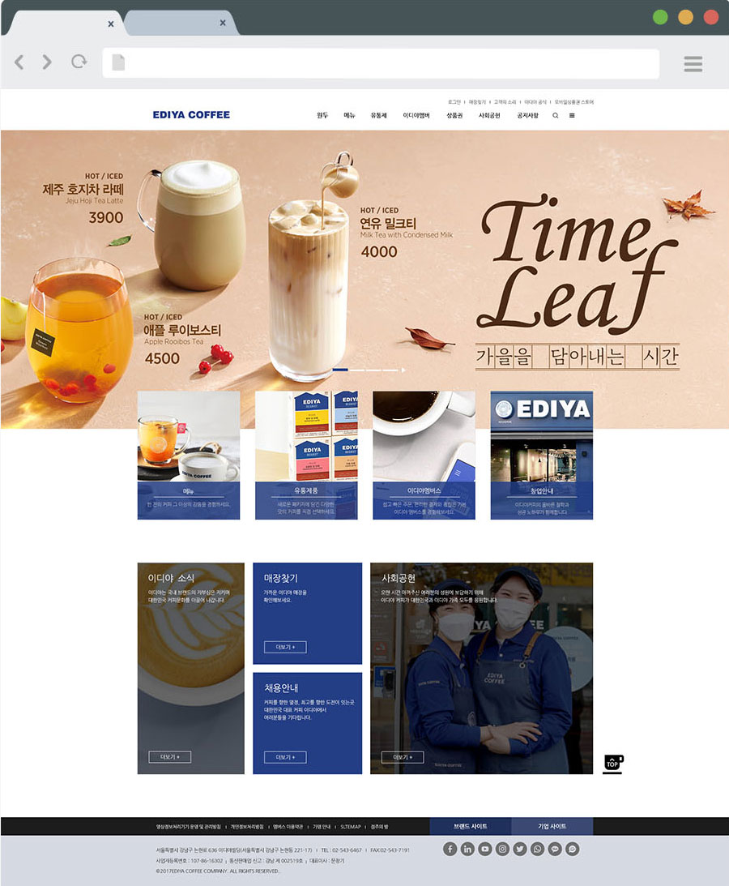
브랜드의 기존 컬러를 유지하면서 주요 메뉴와 콘텐츠를 메인 화면에 재배치한 프로젝트입니다. 사용자가 필요한 정보를 쉽게 확인할 수 있도록 콘텐츠의 우선순위와 배치를 고민했으며, 브랜드의 시각적 일관성과 사용자 편의성을 함께 고려하는 디자인 과정을 경험했습니다.
웹사이트 리디자인
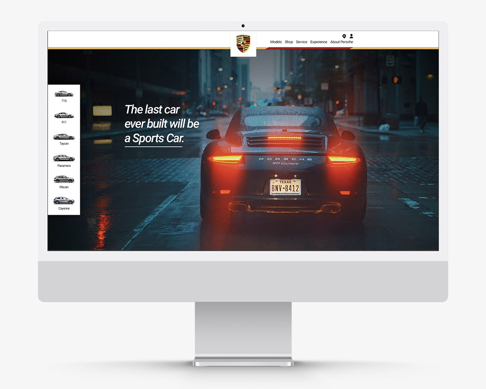
포르쉐의 브랜드 이미지와 주요 차량 모델을 효과적으로 전달하기 위해 진행한 웹사이트 리디자인 프로젝트입니다. 메인 페이지에서는 주력 모델을 강조하고 주요 콘텐츠로 쉽게 이동할 수 있도록 구성했으며, 서브 페이지에서는 다양한 차량을 한눈에 살펴보고 비교할 수 있도록 레이아웃을 정리했습니다.
다양한 차량 모델과 브랜드 콘텐츠를 사용자가 쉽게 탐색하고, 원하는 차량의 정보를 효율적으로 확인할 수 있도록 화면을 구성할 필요가 있었습니다.
포르쉐의 고급스럽고 현대적인 브랜드 이미지를 유지하면서 주요 차량에 대한 접근성과 모델 탐색의 편의성을 높이는 것을 목표로 하였습니다.
메인 페이지에는 주력 차량을 중심으로 콘텐츠를 배치하고, 사이드 바로가기 메뉴를 구성하였습니다. 서브 페이지에는 차량을 그리드 형태로 정렬하고 분류 메뉴를 배치하여 모델별 정보를 쉽게 확인할 수 있도록 디자인하였습니다.
메인 페이지는 대형 차량 이미지와 주요 콘텐츠를 중심으로 구성하고, 화면 좌측에 바로가기 메뉴를 배치하여 원하는 영역으로 쉽게 이동할 수 있도록 하였습니다. 서브 페이지는 4단 그리드를 활용해 차량을 정렬하고, 모델별 정보를 편리하게 비교할 수 있도록 구성하였습니다.
포르쉐 로고의 컬러를 참고하여 레드, 블랙, 화이트를 주요 색상으로 활용하였습니다. Roboto와 맑은 고딕(Malgun Gothic) 서체를 사용하여 간결하고 현대적인 분위기를 유지하고, 차량 이미지와 주요 정보가 돋보이도록 디자인하였습니다.
메인 페이지에는 사이드 바로가기 메뉴와 콘텐츠별 이동 영역을 배치하고, 서브 페이지에는 차량 분류 메뉴와 카드형 UI를 적용하였습니다. 차량 이미지와 모델명을 일정한 형식으로 정리하여 사용자가 여러 모델을 직관적으로 탐색할 수 있도록 구성하였습니다.
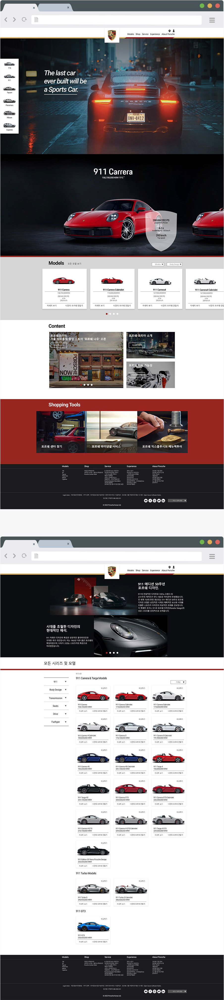
브랜드의 시각적 특징을 유지하면서 차량 중심의 콘텐츠와 탐색 구조를 재구성한 프로젝트입니다. 메인 페이지에서는 주요 모델의 시각적 강조와 콘텐츠 접근성을, 서브 페이지에서는 그리드와 분류 메뉴를 활용한 정보 정리에 중점을 두었습니다. 이를 통해 콘텐츠의 목적에 따라 서로 다른 레이아웃과 UI를 구성하는 경험을 쌓았습니다.
로고 · 앱 리디자인
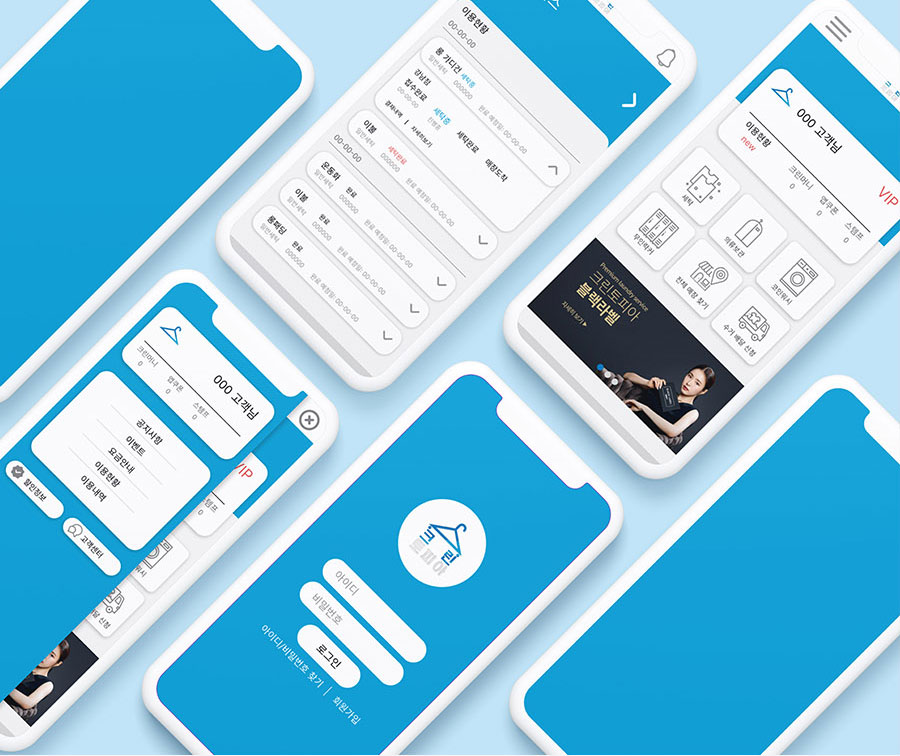
세탁 서비스 브랜드 크린토피아의 모바일 앱을 리디자인한 개인 프로젝트입니다. 브랜드의 특징을 반영한 옷걸이 형태의 로고를 제작하고, 사용자가 다양한 세탁 서비스를 쉽게 확인하고 이용할 수 있도록 직관적이고 간결한 화면으로 구성하였습니다.
다양한 세탁 서비스와 이용 현황을 사용자가 쉽게 확인할 수 있도록 정보를 체계적으로 구성할 필요가 있었습니다.
주요 서비스를 한눈에 파악하고, 현재 이용 중인 세탁 서비스의 진행 상태를 편리하게 확인할 수 있는 앱 화면을 제작하고자 하였습니다.
메인 화면에는 서비스별 아이콘을 배치하여 직관적인 탐색을 유도하고, 서브 화면에는 이용 현황을 요약하여 표시했습니다. 각 항목을 선택하면 상세 정보를 확인할 수 있도록 구성하였습니다.
메인 화면은 주요 서비스를 그리드 형태로 배치하여 한눈에 확인할 수 있도록 구성했습니다. 서브 화면은 이용 중인 서비스의 진행 상태를 목록으로 정리하고, 선택한 항목의 상세 정보가 펼쳐지는 방식으로 디자인하였습니다.
브랜드의 블루 컬러를 중심으로 화이트와 라이트 그레이를 조합하여 깔끔하고 산뜻한 분위기를 표현했습니다. Inter 서체를 사용하고, 정보의 중요도에 따라 글자 크기와 굵기를 구분하여 가독성을 높였습니다.
세탁 서비스를 상징하는 옷걸이 형태의 로고를 리디자인하고, 각 서비스의 특징을 나타내는 아이콘을 활용했습니다. 둥근 모서리의 카드형 UI와 간결한 메뉴 구성을 통해 주요 기능을 쉽게 인지할 수 있도록 디자인하였습니다.
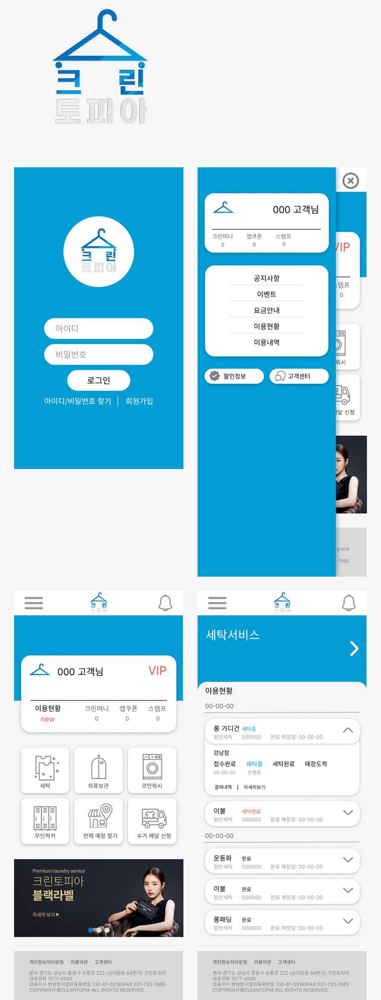
브랜드의 특징을 반영한 로고와 아이콘 중심의 화면을 제작하며 시각적 일관성을 유지하고자 하였습니다. 또한 서비스별 정보를 구분하고 이용 현황을 단계적으로 확인할 수 있도록 구성하면서, 간결한 UI와 정보 배치의 중요성을 경험했습니다.
웹사이트 리디자인
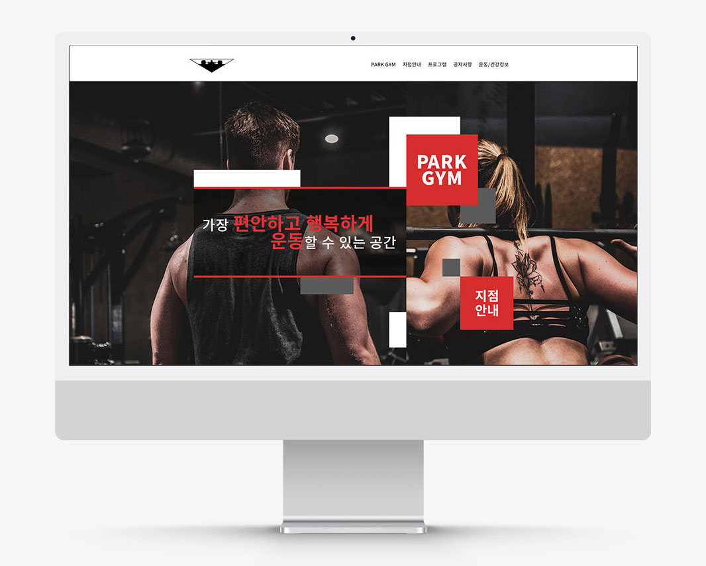
피트니스 센터 PARK GYM의 브랜드 이미지와 주요 서비스를 효과적으로 전달하기 위해 진행한 웹사이트 리디자인 개인 프로젝트입니다. 강렬한 비주얼과 모듈 그리드 레이아웃을 활용하여 역동적이고 전문적인 피트니스 센터의 분위기를 표현하였습니다.
피트니스 센터의 특징과 주요 프로그램을 사용자가 쉽게 파악할 수 있도록 정보와 시각적 요소를 체계적으로 구성할 필요가 있었습니다.
방문자가 메인 화면에서 피트니스 센터의 분위기를 직관적으로 느끼고, 시설 소개와 프로그램 정보를 쉽게 확인할 수 있도록 구성하고자 하였습니다.
메인 화면에 대형 운동 이미지를 배치하여 시선을 유도하고, 서브페이지에는 프로그램과 시설 정보를 구분하여 전달하는 구조로 설계하였습니다.
모듈 그리드를 활용하여 사각형 요소를 규칙적으로 배치하되, 크기와 위치에 변화를 주어 리듬감 있는 화면을 구성하였습니다. 메인 페이지에는 화면을 가득 채우는 이미지를 사용하여 브랜드의 특징을 강조하였습니다.
블랙을 주조색으로 사용하여 무게감 있고 강렬한 분위기를 표현하고, 기존 브랜드의 레드 컬러를 포인트로 활용하여 운동의 열정과 역동성을 강조하였습니다.
운동하는 인물의 이미지를 중심으로 직선과 사각형 그래픽을 조합하여 활동적인 분위기를 연출하였습니다. 텍스트와 그래픽 요소를 이미지 위에 배치하여 시각적인 대비를 높였습니다.
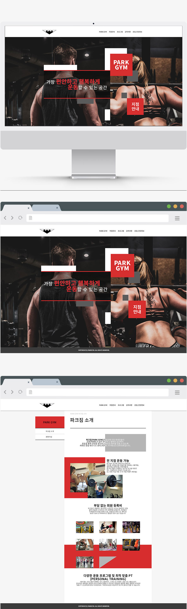
메인 페이지와 피트니스 센터 소개 서브페이지를 제작하여 브랜드의 분위기와 주요 정보를 일관된 디자인으로 표현하였습니다.
영상 콘텐츠 기획 · 촬영 · 편집
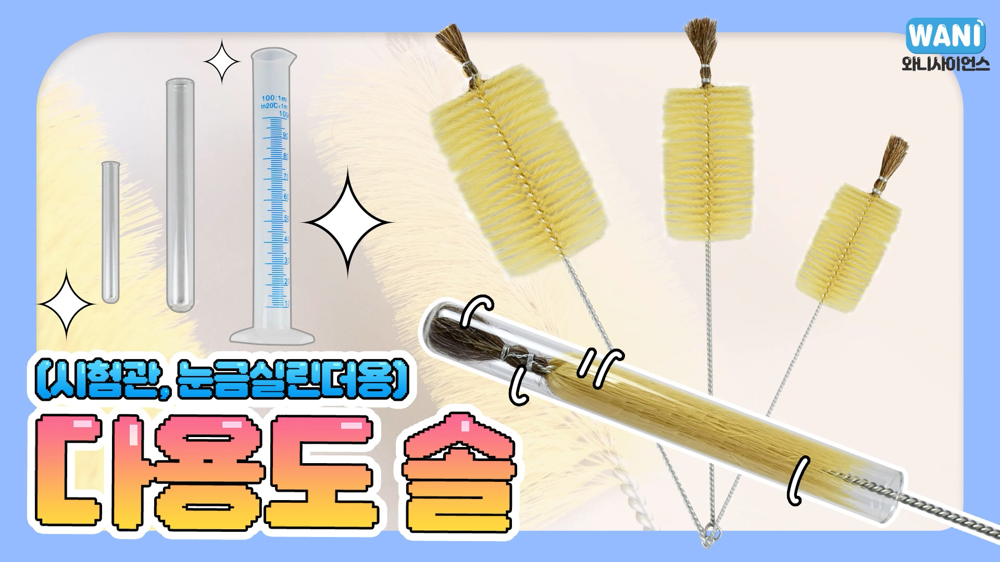
‘실험의 시작은 깨끗한 시험관과 눈금실린더로부터’라는 주제로 제작한 제품 소개 영상입니다. 입구가 좁아 세척이 어려운 시험관과 눈금실린더의 특성을 고려하여, 다양한 크기의 실험 도구를 세척할 수 있는 다용도 솔의 활용성과 장점을 전달하고자 했습니다. 특히 풍성한 솔과 다양한 크기 구성을 강조하여 실험 후에도 도구를 깨끗하게 관리할 수 있다는 점을 보여주었습니다.
입구가 좁고 크기가 다양한 시험관과 눈금실린더는 세척하기 어렵다는 점을 고려하였습니다.
다양한 실험 도구를 깨끗하게 세척할 수 있는 다용도 솔의 활용성과 장점을 전달하고자 하였습니다.
실제 시험관 세척 장면을 중심으로 제품의 사용법을 보여주고, 다양한 크기의 솔이 가진 활용성과 세척 편의성을 시각적으로 강조하였습니다.
과학 실험 도구를 사용하는 학생 및 교육자
다양한 크기의 실험 도구를 깨끗하고 편리하게 세척할 수 있는 다용도 솔
실제 세척 장면과 제품의 특징을 중심으로 한 직관적이고 실용적인 제품 소개 영상
제품 소개부터 실제 세척 시연까지 자연스럽게 이어지도록 영상을 구성하였습니다.
제품과 세척 과정에 집중할 수 있도록 간결한 자막과 그래픽을 활용하였습니다.
시험관 세척 장면을 통해 솔의 풍성함과 다양한 크기별 활용성을 시각적으로 강조하였습니다.
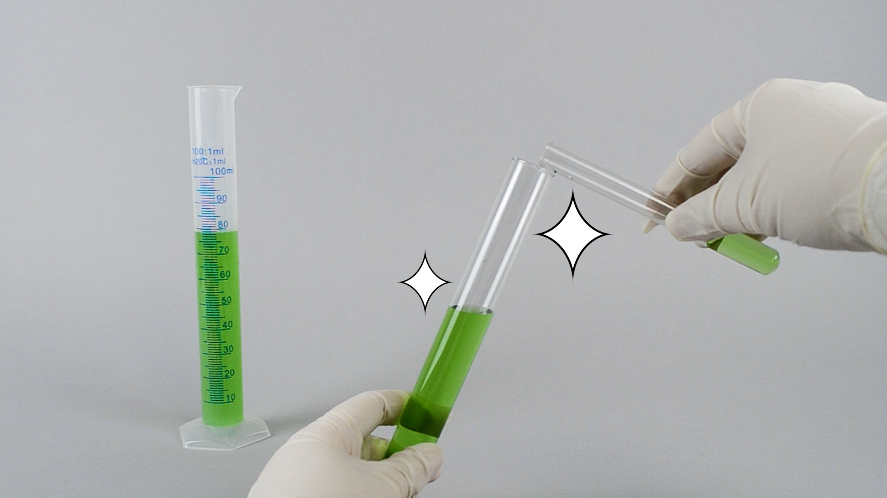
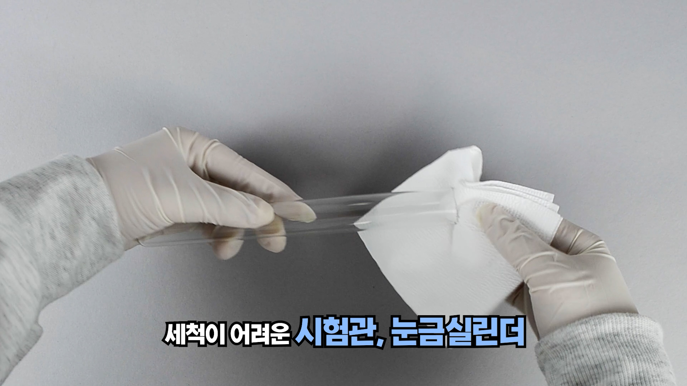
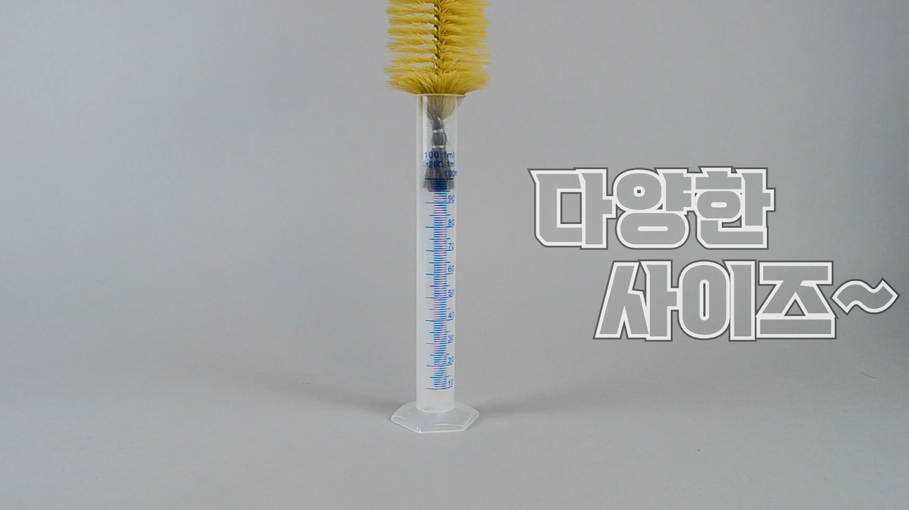
다양한 크기의 시험관과 눈금실린더를 직접 세척하는 장면을 촬영하여 다용도 솔의 활용성과 편의성을 시각적으로 전달하고자 했습니다. 풍성한 솔 모양과 다양한 크기 구성을 효과적으로 보여주는 데 중점을 두었습니다. 이를 위해 크기가 다른 시험관을 직접 준비하고, 각각의 시험관을 세척하는 장면을 촬영하여 제품의 활용성을 시각적으로 강조했습니다. 이번 작업을 통해 제품의 장점을 효과적으로 전달하기 위해서는 단순한 설명보다 특징이 잘 드러나는 촬영 대상과 시연 장면을 구성하는 것이 중요하다는 점을 배웠습니다.
영상 콘텐츠 기획 · 촬영 · 편집
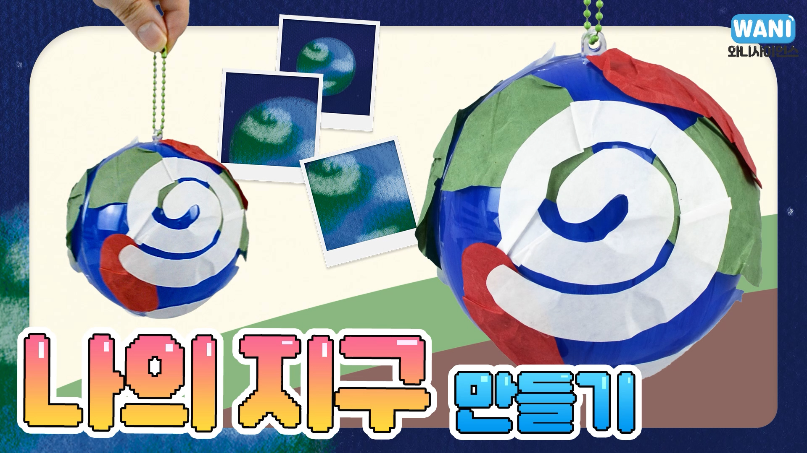
우주인이 촬영한 지구 사진을 바탕으로 나만의 지구를 만들어보는 과학 체험 교육 영상입니다. 직접 제작한 일러스트를 활용해 우주인이 지구를 촬영하는 이야기를 도입부에 구성하여 시청자의 흥미를 유도했습니다. 이후 플라스틱 반구 안쪽에 물감으로 색칠하고 겉면에 한지를 붙여 지구 모형을 완성하는 과정을 소개하며, 만들기 활동을 통해 지구의 특징을 자연스럽게 이해할 수 있도록 기획했습니다.
지구의 특징을 설명만으로 학습할 경우, 학습자의 흥미와 참여를 유도하기 어렵다는 점을 고려하였습니다.
직접 지구 모형을 제작하는 활동을 통해 지구의 특징을 쉽고 재미있게 이해할 수 있도록 유도하였습니다.
직접 그린 일러스트를 활용한 우주인 스토리로 호기심을 유발하고, 단계별 만들기 과정을 통해 자연스럽게 체험 활동으로 연결하였습니다.
지구와 우주에 관심 있는 학생 및 교육자
나만의 지구를 직접 만들고 소개하며 지구의 특징을 재미있게 알아보는 체험 활동
우주인의 지구 탐험 이야기를 담은 일러스트와 실제 만들기 과정을 결합한 친근하고 흥미로운 교육 영상
우주인의 지구 촬영 이야기에서 시작하여 재료 소개, 지구 모형 제작, 완성 작품 소개까지 자연스럽게 이어지도록 영상을 구성하였습니다.
지구의 다양한 색감을 활용한 만들기 장면과 직접 제작한 일러스트를 통해 친근하고 생동감 있는 분위기를 연출하였습니다.
우주인이 지구를 촬영하는 일러스트 장면과 플라스틱 반구에 색칠하고 한지를 붙이는 실제 제작 과정을 시각적으로 연결하였습니다.
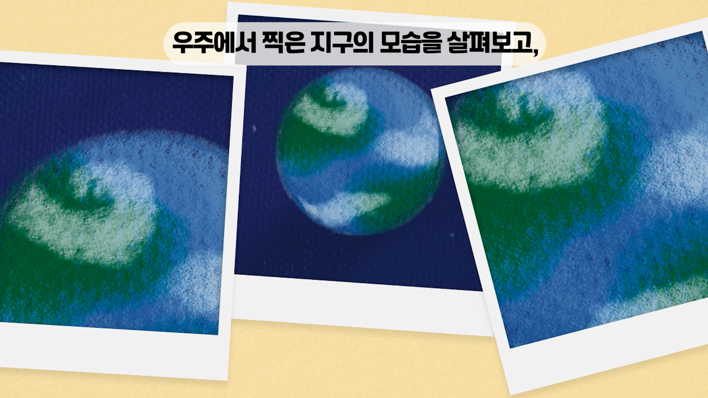
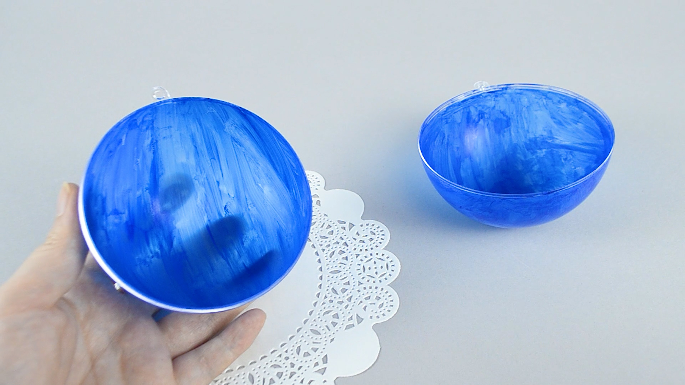
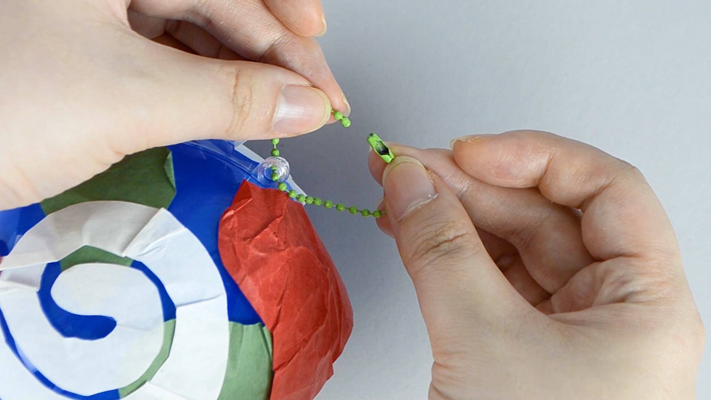
직접 그린 일러스트를 활용해 우주인이 지구를 촬영하는 이야기를 구성하고, 이를 실제 지구 모형 만들기 활동과 연결하여 영상의 흥미를 높이고자 했습니다. 특히 시청자가 제작 과정을 쉽게 따라 할 수 있도록 색칠과 한지 부착 과정을 단계별로 보여주는 데 중점을 두었습니다. 이번 작업을 통해 교육 영상에서는 단순한 제작 과정의 전달뿐 아니라, 스토리텔링과 시각적 연출을 활용해 학습에 대한 흥미를 유도하는 것이 중요하다는 점을 배웠습니다.
영상 콘텐츠 기획 · 촬영 · 편집
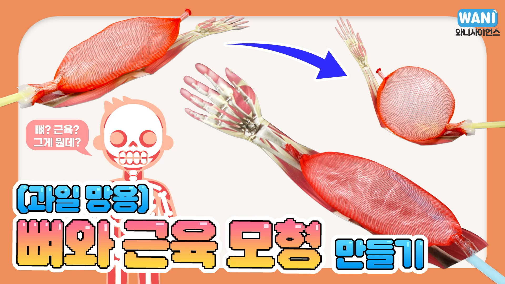
우리 몸의 뼈와 근육이 움직이는 원리를 쉽고 흥미롭게 이해할 수 있도록 제작한 과학 교육 영상입니다. 태권도 동작을 하는 아이들의 일러스트와 질문을 활용해 시청자의 호기심을 유도하고, 비닐봉지에 공기를 넣고 빼는 방식의 뼈와 근육 모형 제작 과정을 소개했습니다. 이후 모형의 움직임을 실제 신체 구조와 연결하여 뼈와 근육의 역할을 자연스럽게 이해할 수 있도록 구성했습니다.
뼈와 근육의 움직임을 설명만으로 이해하기 어려워 직관적인 학습이 필요하다고 판단하였습니다.
모형 제작과 움직임 관찰을 통해 뼈와 근육의 역할 및 움직임의 원리를 쉽게 이해할 수 있도록 유도하였습니다.
태권도 동작을 활용한 질문으로 호기심을 유발하고, 모형 제작과 실제 움직임 시연을 통해 과학 원리를 단계적으로 전달하였습니다.
인체의 구조와 움직임에 관심 있는 학생 및 교육자
직접 모형을 만들고 움직임을 관찰하며 뼈와 근육이 함께 작용하는 원리 이해
친근한 일러스트와 실제 모형 제작 및 작동 장면을 결합한 직관적인 과학 체험 교육 영상
태권도 동작을 활용한 질문에서 시작하여 모형 제작, 움직임 관찰, 뼈와 근육의 원리 설명까지 단계적으로 이어지도록 영상을 구성하였습니다.
친근한 일러스트와 간결한 설명을 활용하여 어린이도 쉽게 이해할 수 있는 교육 콘텐츠의 분위기를 연출하였습니다.
비닐봉지에 공기를 주입하고 배출하는 과정에서 나타나는 팔 모형의 움직임을 보여주고, 일러스트를 활용하여 실제 뼈와 근육의 구조를 시각적으로 설명하였습니다.
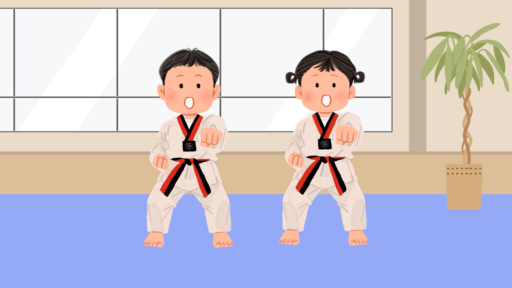
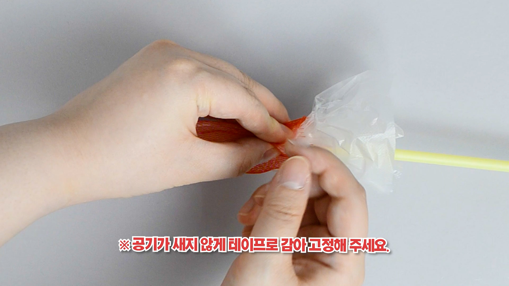
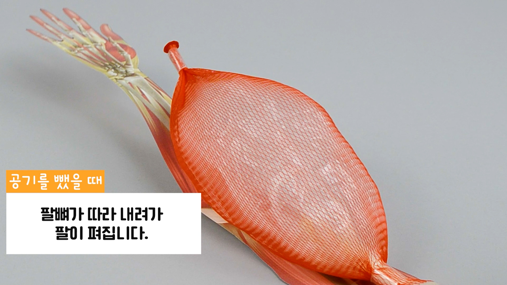
뼈와 근육의 구조 및 움직임을 시청자가 쉽게 이해할 수 있도록 시각적으로 표현하는 데 어려움이 있었습니다. 이를 해결하기 위해 모형의 작동 장면과 일러스트를 함께 활용하여 팔이 구부러지고 펴지는 과정을 단계적으로 보여주고자 했습니다. 특히 공기의 주입과 배출에 따른 모형의 움직임을 실제 뼈와 근육의 작용과 연결하여 설명하는 데 중점을 두었습니다. 이번 작업을 통해 복잡한 과학 원리를 전달할 때는 적절한 시각 자료와 체계적인 영상 구성이 중요하다는 점을 배웠습니다.
자사몰 운영 안내 · 팝업 디자인
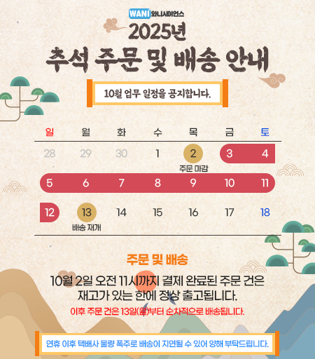
추석 연휴에 따른 주문 마감 및 배송 재개 일정을 안내하기 위해 제작한 자사몰 공지 팝업입니다. 고객이 주요 일정을 쉽게 확인할 수 있도록 달력과 배송 안내 문구를 중심으로 구성했습니다.
달력에 주문 마감일과 배송 재개일을 강조, 하단에 주문 및 배송 관련 안내 사항을 배치하여 정보의 우선순위를 구분
따뜻한 베이지 톤을 배경으로 전통적인 분위기를 표현, 레드 컬러를 활용하여 주요 일정과 안내 문구를 강조
전통 산수화와 구름을 연상시키는 그래픽 요소를 활용해 추석 분위기를 표현, 달력에 색상별 표시를 적용하여 일정을 직관적으로 전달
자사몰 운영 안내 · 팝업 디자인
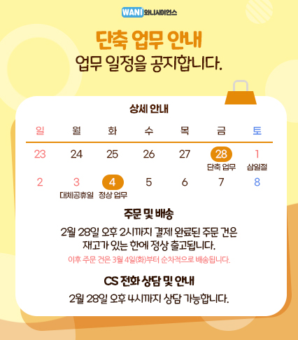
단축 업무 일정에 따른 주문 및 배송, 고객 상담 운영 시간의 변경 사항을 안내하기 위해 제작한 자사몰 공지 팝업입니다. 고객이 주요 일정을 쉽게 파악할 수 있도록 달력과 안내 문구를 중심으로 구성했습니다.
달력을 중심으로 단축 업무일과 대체공휴일을 강조, 하단에 주문·배송 및 고객 상담 안내를 구분하여 배치
밝은 옐로우와 오렌지 컬러를 활용해 경쾌하고 친근한 분위기를 연출, 중요한 날짜와 제목에 색상 대비를 주어 가독성을 높임
여러 장의 종이를 겹쳐 클립으로 고정한 듯한 그래픽을 활용하여 공지문 콘셉트를 표현, 주요 날짜를 원형으로 강조해 일정을 직관적으로 전달
자사몰 운영 안내 · 팝업 디자인
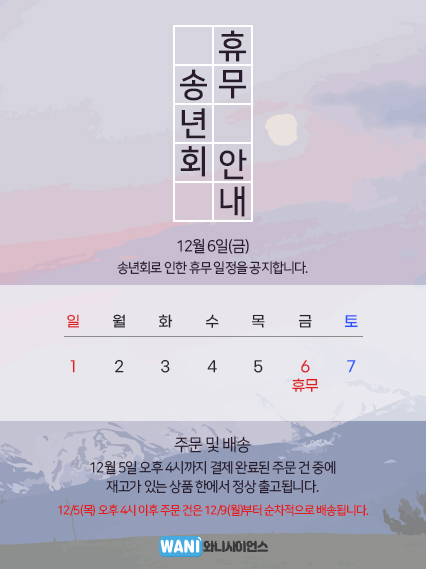
사내 송년회로 인한 휴무 일정과 주문 및 배송 변경 사항을 안내하기 위해 제작한 자사몰 공지 팝업입니다. 휴무 날짜와 배송 일정을 고객이 쉽게 확인할 수 있도록 달력과 안내 문구를 중심으로 구성했습니다.
세로형 타이포그래피를 활용해 제목에 시선을 집중, 달력과 주문·배송 안내를 순서대로 배치하여 주요 정보를 쉽게 확인할 수 있도록 구성
차분한 퍼플과 그레이 계열의 컬러를 활용하여 겨울 특유의 고요한 분위기를 표현, 제목은 격자형 타이포그래피로 구성해 시각적인 차별화
겨울 풍경 이미지를 일러스트 스타일로 가공하여 배경에 활용, 부드러운 색감과 그래픽 요소를 통해 차분하고 감성적인 분위기를 연출
배너 디자인
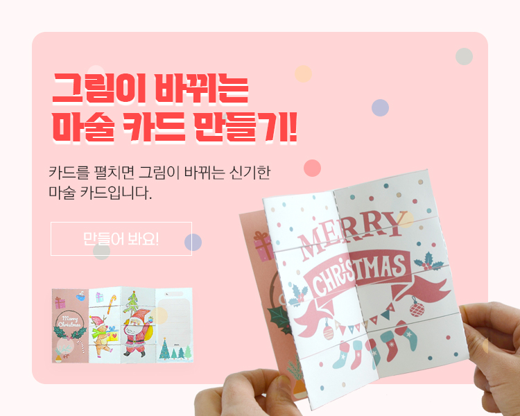
카드를 펼치면 그림이 바뀌는 마술 카드 만들기 키트의 특징을 소개하기 위해 제작한 홍보 배너입니다. 실제 카드를 펼치는 모습을 활용하여 제품의 변화를 시각적으로 보여주고, 사용자의 호기심과 흥미를 유도하도록 구성하였습니다.
좌측에는 제품의 특징을 강조하는 제목과 설명, 참여를 유도하는 버튼을 배치하고, 우측에는 실제 카드를 펼치는 모습을 배치하여 제품의 활용 방법을 직관적으로 전달하였습니다.
부드러운 핑크 컬러를 배경으로 사용하여 밝고 친근한 분위기를 연출하였습니다. 레드 계열의 굵은 타이포그래피와 화이트 그림자를 활용하여 핵심 문구가 눈에 띄도록 디자인하였습니다.
크리스마스 카드의 실제 사용 장면을 중심으로 제품의 특징을 표현하였습니다. 배경에는 파스텔톤의 원형 그래픽을 배치하여 경쾌하고 아기자기한 분위기를 더했습니다.
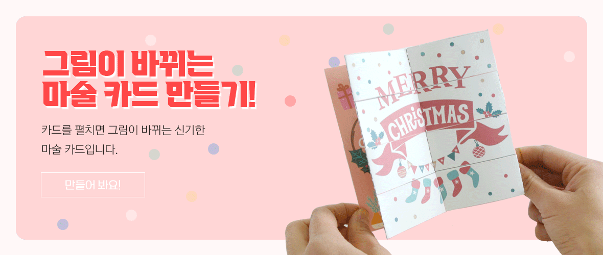
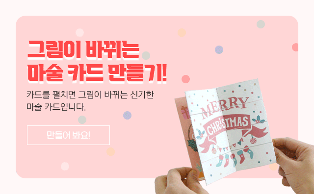
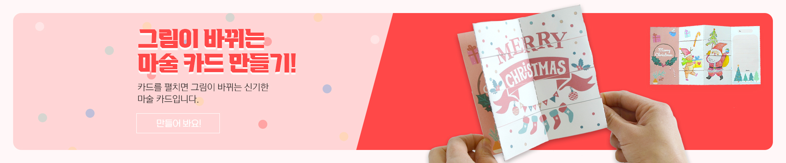
배너 디자인
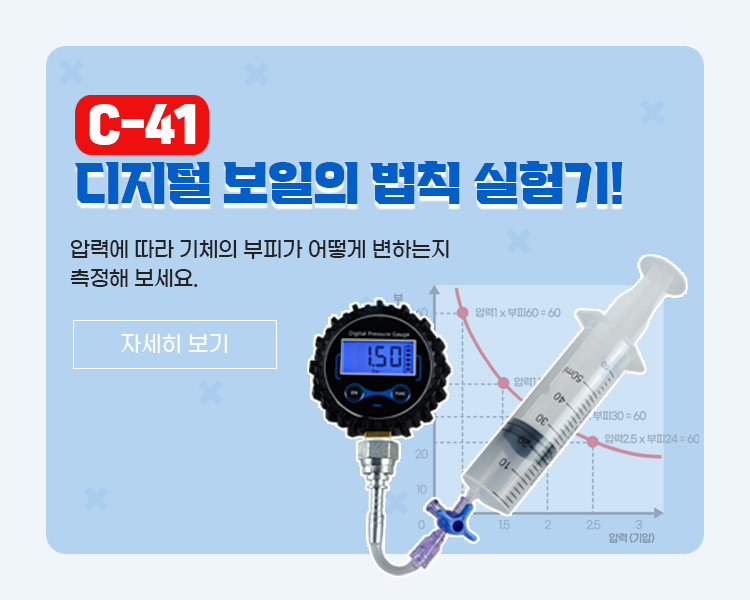
디지털 보일의 법칙 실험기의 특징을 소개하기 위해 제작한 PC 및 모바일용 홍보 배너입니다. 압력에 따른 기체의 부피 변화를 시각적으로 전달하고, 디지털 압력계의 숫자가 변하는 애니메이션을 활용하여 제품에 대한 관심을 유도하였습니다.
제품명과 핵심 설명을 좌측에 배치하고, 우측에는 실험기 이미지와 그래프를 구성하여 제품의 특징을 직관적으로 전달하였습니다. PC와 모바일 환경에 맞춰 이미지와 텍스트의 배치를 조정하였습니다.
블루 계열을 중심으로 과학 실험기기의 전문적이고 신뢰감 있는 분위기를 표현하였습니다. 굵은 타이포그래피와 명확한 색상 대비를 활용하여 제품명과 핵심 메시지의 가독성을 높였습니다.
디지털 압력계와 주사기, 그래프 이미지를 조합하여 실험 원리를 시각적으로 표현하였습니다. 압력계의 숫자가 변하는 GIF 애니메이션을 적용하여 정적인 배너에서도 제품의 작동 모습을 전달할 수 있도록 구성하였습니다.
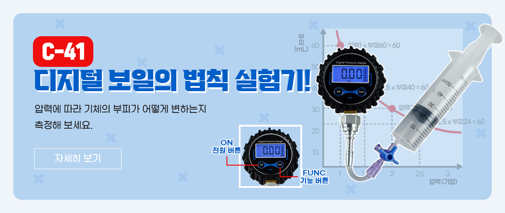
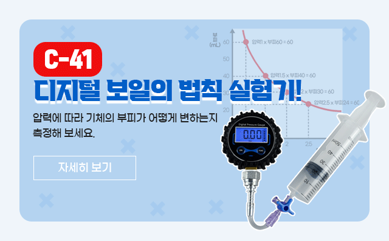
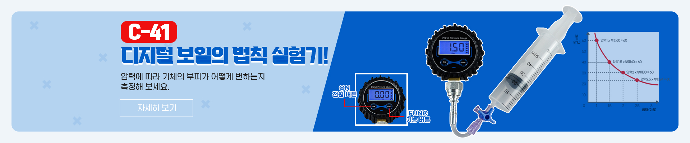
배너 디자인
온라인 쇼핑몰에서 출판사와 단원별로 분류된 상품을 사용자가 쉽게 찾을 수 있도록 제작한 기능 안내 배너입니다. 상품 검색의 편리함을 강조하고, 원하는 상품을 빠르게 찾을 수 있다는 점을 직관적으로 전달하고자 하였습니다.
중앙에 핵심 문구를 크게 배치하여 시선을 집중시키고, 하단에는 기능에 대한 설명을 추가하여 정보가 자연스럽게 전달되도록 구성하였습니다.
밝은 그린 계열의 배경과 굵은 타이포그래피를 활용하여 친근하고 경쾌한 분위기를 연출하였습니다. 핵심 키워드에는 초록색을 적용하고, 주의 문구는 빨간색으로 구분하여 정보의 가독성을 높였습니다.
책을 연상시키는 곡선과 학습 관련 도형 그래픽을 배경에 활용하여 교육용 상품을 취급하는 쇼핑몰의 특징을 표현하였습니다. 장식 요소는 연한 색상으로 처리하여 핵심 문구가 돋보이도록 구성하였습니다.